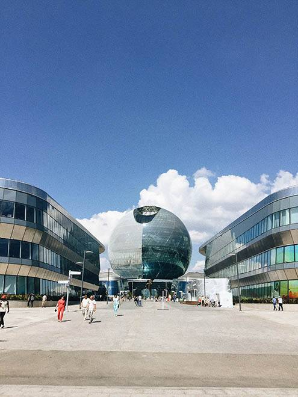
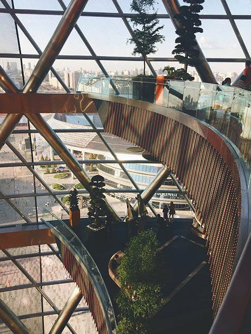

Нур-Султан — столица Казахстана, которая еще недавно была Астаной.
Ира Шустова
Была еще в АстанеЯ провела там 3 дня, когда ездила на выставку «Экспо-2017». Это чистый и
современный город: многие здания и районы построены в последние двадцать
лет.
Там нет модных кафе и уютных туристических улочек, зато есть
грандиозные строения и широкие проспекты.
Нур-Султан должен понравиться
тем, кто любит современную архитектуру.
Главные достопримечательности успеете осмотреть за день — я составила
маршрут на 14 км. Он начинается у мечети Хазрет-Султан и заканчивается у
Музея
будущего в бывших павильонах «Экспо». По пути посмотрите Дворец
мира и согласия, библиотеку Назарбаева, башню «Байтерек» и торговый центр
«Хан
Шатыр».
От международного аэропорта Нурсултан Назарбаев в город ходят автобусы №
10, 12 и 100. Подробные маршруты есть
на сайте аэропорта.
Проезд стоит 180
KZT (31 Р),
если платить наличными, и 90 KZT (15 Р) при оплате
транспортной картой. В аэропорте ее продают
в терминале напротив справочной
службы. транспортной картой.
В аэропорте ее продают Поездка на
такси обойдется примерно в 2000 KZT (343 Р).
Маршрут
Мечеть Хазрет-Султан - одна из самых больших в Центральной
Азии. Это светлое и красивое здание, построенное в исламском стиле и
украшенное традиционными
казахскими узорами. Вход бесплатный. Если
планируете зайти внутрь, прикройте колени и плечи. Женщин просят надеть
платок, который скрывает волосы.
Дворец мира и согласия в народе называют пирамидой. Она
построена по проекту именитого британского архитектора Нормана Фостера для
съезда представителей
разных конфессий. Сейчас в ней действует оперный
зал и сдаются в аренду конференц-залы.
На первом этаже есть небольшой этнографический музей, в котором можно
посмотреть на свадебные наряды разных народов Азии. Посещение стоит 1000 KZT
(171 Р).
На последнем этаже — смотровая площадка, но из-за мутного
стекла и металлических рам самого здания не получится хорошо рассмотреть
город. Мне пирамида была
интересна больше как архитектурный объект.
Библиотека первого президента Казахстана Нурсултана
Назарбаева — здание, которое выглядит как космическая тарелка. Там хранятся
книги, которые написал или
получил в подарок Назарбаев. Под стеклом
размещены фрагменты его писем другим мировым лидерам, а в отдельном зале
выставлены произведения искусства, которые
первый президент Казахстана
получал в подарок. Книги нельзя читать, а остальные экспонаты — трогать, так
что на библиотеку в привычном понимании это мало похоже.
Просто так в библиотеку не зайти: нужно записываться на сайте. На входе — КПП, где попросят предъявить документы.
Башня «Байтерек» высотой 100 метров считается главным
символом Нур-Султана. Она построена в виде дерева, на ветвях которого
хранится яйцо дракона из казахской
мифологии. Внутри башни ходит
скоростной
лифт, который поднимает туристов в это самое яйцо — на обзорную площадку и в
бар. Еще в башне «Байтерек» находится
золотой слиток с оттиском руки
Нурсултана Назарбаева. Говорят, прикосновение к нему приносит удачу.
Вход в башню стоит 700 KZT (120 Р). Очереди на вход огромные: летом можно простоять несколько часов. Мы туда так и не попали.
Торговый центр «Хан Шатыр» выглядит как огромный степной шатер — он даже вошел в книгу рекордов Гиннесса как самый большой шатер в мире. Внутри кроместандартных кафе и магазинов — аттракционы и даже искусственный пляж. Песок для него специально привезли с Мальдив.
Музей будущего расположен в здании главного павильона
«Экспо-2017», построенного в форме шара диаметром 150 метров. Добраться до
этой точки маршрута можно на
автобусе № 10 от «Хан Шатыра». Билет стоит
1500 KZT (257 Р), студентам и школьникам делают скидки.
Каждый этаж музея посвящен одному виду энергии. Например, мы видели ампулы с
биотопливом из водорослей. Предполагается, что в будущем такими ампулами
можно
будет заправлять самолеты. Интерьеры и оснащение музея напоминают
фантастический фильм про космические станции. Здесь точно понравится детям,
но и мы с
попутчиками были в восторге.
 
Детали
Деньги. В Казахстане в ходу тенге. Карты принимают в крупных магазинах и торговых центрах, в остальных местах могут понадобиться наличные.В обменниках рубли легко меняют на тенге. Транспорт. К концу 2019 года в Нур-Султане планируют открыть первую ветку легкорельсового надземного
метро. Пока по городу можно легко перемещаться на автобусах. Маршрутов много, автобусы ходят часто и регулярно. Проезд стоит в среднем 90 KZT (15 Р).
Маршруты удобно планировать на сайте «Изивэй». Еда. В Нур-Султане можно пообедать на проспекте Туран, его называют аллеей ресторанов. В казахской
национальной кухне много мясных блюд, в том числе из баранины и конины. Туристы заказывают плов, лапшу, разные колбасы и бешбармак — кусочки
баранины или конины и тесто в бульоне. В ресторане «Саксаул» плов с говядиной стоит 1760 KZT (302 Р), с кониной — 2250 KZT (386 Р), бешбармак с кониной —
2890 KZT (495 Р). Советую обязательно попробовать местный айран — газированный молочный напиток из коровьего или козьего молока с необычным вкусом.
Стакан стоит в среднем 53 KZT (9 Р).
Обычно за ужин с алкоголем в ресторане я платила 6500 KZT (1114 Р), но можно поесть и дешевле: в небольших кафе лагман с овощами обойдется в 700 KZT (120 Р).
Алкоголь. Основная религия в Казахстане — ислам, поэтому там не принято выпивать на улице, а в некоторых ресторанах нет винной карты. В хостеле, где яостанавливалась, постояльцев предупреждали: на их территории лучше не пить алкоголь. Конечно, туристов вряд ли выселят из-за бутылки пива или бокала вина, но,
если хотите проявить уважение к своим хостам, лучше воздержаться. Куда съездить за город. Из Нур-Султана можно съездить на поезде в Бурабай — это природный
заповедник с краснокнижными животными и растениями. Из-за горных пейзажей и синих озер его называют казахской Швейцарией.
Билет в среднем стоит 5900 KZT (1011 Р), расписание удобно смотреть в «Яндексе».